head( sdat ) id size sector meanses
1 1224 842 public -0.428
2 1288 1855 public 0.128
3 1296 1719 public -0.420
4 1308 716 catholic 0.534
5 1317 455 catholic 0.351
6 1358 1430 public -0.014expand.gridIn this chapter we demonstrate using the predict() function to make plots with separate lines for different groups. A core element for doing this is the expand.grid() method. The central idea is this: for each of our groups we manually create a series of points at different levels of our covariate (e.g. ses or time) and then predict the outcome for each of these values. We then plot these predicted points, and it makes a smooth curve for that group.
In this document we start with clustered data (the HS&B dataset) and then illustrate how to this with longitudinal data as well.
In this section we first look at how to plot the model results by making a tiny dataset from the fixed effects, and then we extend to more powerful plotting of individual schools.
The “many small worlds” view says each school has its own regression line. We are going to plot them all. See the lecture code files for how to load the HS&B dataset. For clarity it is omitted from the printout. We end up with this for the schools:
head( sdat ) id size sector meanses
1 1224 842 public -0.428
2 1288 1855 public 0.128
3 1296 1719 public -0.420
4 1308 716 catholic 0.534
5 1317 455 catholic 0.351
6 1358 1430 public -0.014and this for students (we merged in the school info already):
head( dat ) id minority female ses mathach size sector meanses
1 1224 0 1 -1.528 5.876 842 public -0.428
2 1224 0 1 -0.588 19.708 842 public -0.428
3 1224 0 0 -0.528 20.349 842 public -0.428
4 1224 0 0 -0.668 8.781 842 public -0.428
5 1224 0 0 -0.158 17.898 842 public -0.428
6 1224 0 0 0.022 4.583 842 public -0.428We fit a fancy random slopes model with 2nd level covariates that impact both the overall school means and the ses by math achievment slopes. Our model is \[ \begin{aligned} y_{ij} &= \beta_{0j} + \beta_{1j} ses_{ij} + \epsilon_{ij} \\ \beta_{0j} &= \gamma_{00} + \gamma_{01} sector_j + u_{0j} \\ \beta_{1j} &= \gamma_{10} + \gamma_{11} sector_j + u_{1j} \end{aligned} \] We omit the equations for the random effect distributions. The \(\epsilon_{ij}\) are normal, and the \((u_{0j},u_{1j})\) are bivariate normal, as usual. We fit the model as so:
M1 = lmer( mathach ~ 1 + ses*sector + (1 + ses|id), data=dat )Warning in checkConv(attr(opt, "derivs"), opt$par, ctrl = control$checkConv, :
Model failed to converge with max|grad| = 0.00578927 (tol = 0.002, component 1)display( M1 )lmer(formula = mathach ~ 1 + ses * sector + (1 + ses | id), data = dat)
coef.est coef.se
(Intercept) 11.75 0.23
ses 2.96 0.14
sectorcatholic 2.13 0.35
ses:sectorcatholic -1.31 0.22
Error terms:
Groups Name Std.Dev. Corr
id (Intercept) 1.95
ses 0.28 1.00
Residual 6.07
---
number of obs: 7185, groups: id, 160
AIC = 46585.1, DIC = 46557.2
deviance = 46563.2 We can plot the model results by making a little dataset by hand. This section of the handout illustrates how you can hand-construct plots by directly calculating predicted values from your model. This is a very useful skill, and we recommend studying this area of the handout as a way of learning how to control plotting at a very direct level.
So, to continue, we proceed in three steps.
Step 1: Decide on the plot. Let’s make a plot of outcome vs. ses with two lines (one for catholic and one for public). Sometimes it is worth actually sketching the desired plot on scratch paper, identifying the x and y axes and general lines desired.
Step 2: calculate some outcomes using our model. We do this by deciding what values we want to plot, and then making the outcome.
quantile( dat$ses, c( 0.05, 0.95 ) ) 5% 95%
-1.318 1.212 plt = data.frame( ses = c(-1.5, 1.25, -1.5, 1.25 ),
catholic = c( 0, 0, 1, 1 ) )
cf = fixef( M1 )
cf (Intercept) ses sectorcatholic ses:sectorcatholic
11.751789 2.957538 2.129531 -1.313363 plt = mutate( plt,
Y = cf[[1]] + cf[[2]]*ses + cf[[3]]*catholic + cf[[4]]*ses*catholic )
plt ses catholic Y
1 -1.50 0 7.315482
2 1.25 0 15.448711
3 -1.50 1 11.415057
4 1.25 1 15.936538Note that we have made a little mini-dataset with just the points we want to put on our plot. We calculated these points “by hand”. There is no shame in this.
Step 3: plot. We plot using ggplot:
plt$catholic = factor( plt$catholic,
labels=c("public","catholic"),
levels=c(0,1) )
ggplot( plt, aes( ses, Y, col=catholic ) ) +
geom_line()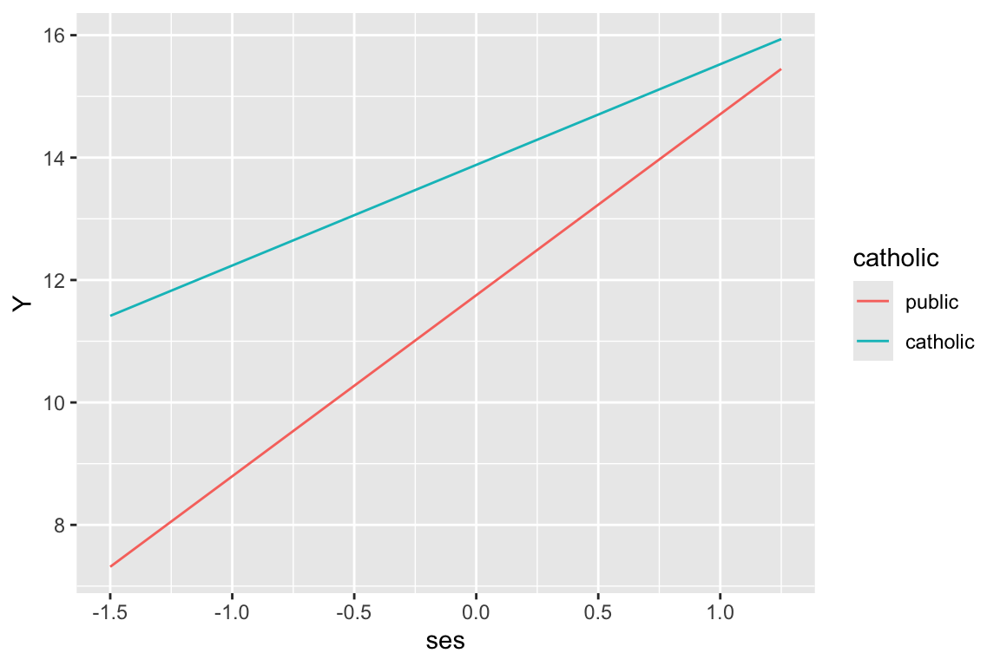
Say we decided to fit a model where we have ses categories:
dat$ses.cat = cut( dat$ses,
breaks=quantile( dat$ses, c( 0, 0.33, 0.67, 1 ) ),
labels = c( "low","mid","high"),
include.lowest = TRUE )
table( dat$ses.cat )
low mid high
2371 2462 2352 M1b = lmer( mathach ~ 1 + ses.cat*sector + (1 + ses|id), data=dat )
display( M1b )lmer(formula = mathach ~ 1 + ses.cat * sector + (1 + ses | id),
data = dat)
coef.est coef.se
(Intercept) 9.19 0.27
ses.catmid 2.28 0.25
ses.cathigh 5.07 0.29
sectorcatholic 3.44 0.42
ses.catmid:sectorcatholic -0.98 0.38
ses.cathigh:sectorcatholic -2.47 0.42
Error terms:
Groups Name Std.Dev. Corr
id (Intercept) 2.05
ses 0.47 0.23
Residual 6.10
---
number of obs: 7185, groups: id, 160
AIC = 46691.5, DIC = 46660.7
deviance = 46666.1 Make our outcomes:
plt = data.frame( ses.mid = c( 0, 1, 0, 0, 1, 0 ),
ses.high = c( 0, 0, 1, 0, 0, 1 ),
catholic = c( 0, 0, 0, 1, 1, 1 ) )
cf = fixef( M1b )
cf (Intercept) ses.catmid
9.1915044 2.2808807
ses.cathigh sectorcatholic
5.0721921 3.4398984
ses.catmid:sectorcatholic ses.cathigh:sectorcatholic
-0.9759927 -2.4707460 plt = mutate( plt,
Y = cf[[1]] + cf[[2]]*ses.mid + cf[[3]]*ses.high +
cf[[4]]*catholic + cf[[5]]*ses.mid*catholic + cf[[6]]*ses.high*catholic )
plt ses.mid ses.high catholic Y
1 0 0 0 9.191504
2 1 0 0 11.472385
3 0 1 0 14.263697
4 0 0 1 12.631403
5 1 0 1 13.936291
6 0 1 1 15.232849And plot
plt$catholic = factor( plt$catholic,
labels=c("public","catholic"),
levels=c(0,1) )
plt$ses = "low"
plt$ses[plt$ses.mid==1] = "mid"
plt$ses[plt$ses.high==1] = "high"
plt$ses = factor( plt$ses, levels=c("low","mid","high") )
ggplot( plt, aes( ses, Y, col=catholic, group=catholic ) ) +
geom_line() + geom_point()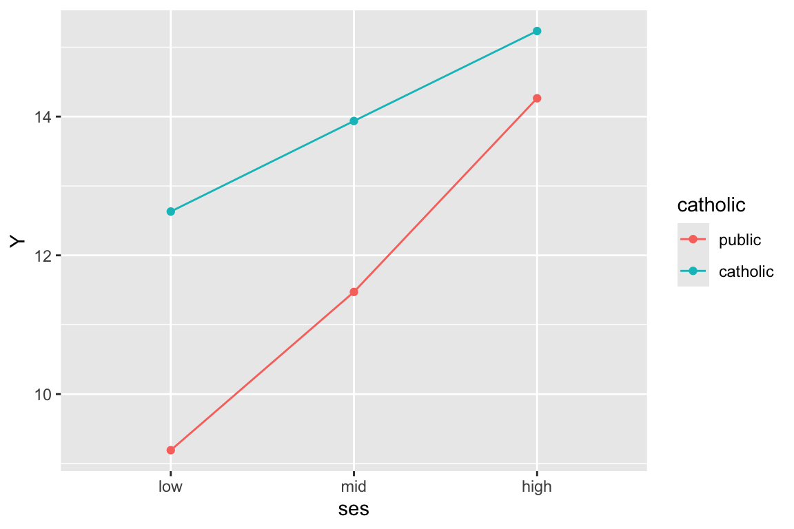
Note the very important group=catholic line that tells the plot to group everyone by catholic. If not, it will get confused and note that since ses is categorical, try to group on that. Then it cannot make a line since each group has only a single point.
We can plot the individual lines by hand-calculating the school level slopes and intercepts. This code shows how:
coefs = coef( M1 )$id
head( coefs ) (Intercept) ses sectorcatholic ses:sectorcatholic
1224 11.084408 2.863501 2.129531 -1.313363
1288 12.761032 3.099743 2.129531 -1.313363
1296 9.193415 2.597052 2.129531 -1.313363
1308 12.709882 3.092535 2.129531 -1.313363
1317 10.719013 2.812016 2.129531 -1.313363
1358 11.478455 2.919031 2.129531 -1.313363coefs = rename( coefs,
gamma.00 = `(Intercept)`,
gamma.10 = `ses`,
gamma.01 = `sectorcatholic`,
gamma.11 = `ses:sectorcatholic` )
coefs$id = rownames( coefs )
coefs = merge( coefs, sdat, by="id" )
coefs = mutate( coefs,
beta.0 = gamma.00 + gamma.01 * (sector=="catholic"),
beta.1 = gamma.10 + gamma.11 * (sector=="catholic") )Note how we have to add up our gammas to get our betas for each school. See our final betas, one set for each school:
head( dplyr::select( coefs, -gamma.00, -gamma.10, -gamma.01, -gamma.11 ) ) id size sector meanses beta.0 beta.1
1 1224 842 public -0.428 11.084408 2.863501
2 1288 1855 public 0.128 12.761032 3.099743
3 1296 1719 public -0.420 9.193415 2.597052
4 1308 716 catholic 0.534 14.839413 1.779172
5 1317 455 catholic 0.351 12.848543 1.498653
6 1358 1430 public -0.014 11.478455 2.919031Now let’s plot a subsample of 20 schools
set.seed( 102030 )
sub20 = sample( unique( dat$id ), 20 )
coefs.20 = filter( coefs, id %in% sub20 )
ggplot( coefs.20, aes( group=id ) ) +
geom_abline( aes( slope=beta.1, intercept=beta.0, col=sector) ) +
coord_cartesian( xlim=c(-2.5,2), ylim=range(dat$mathach) )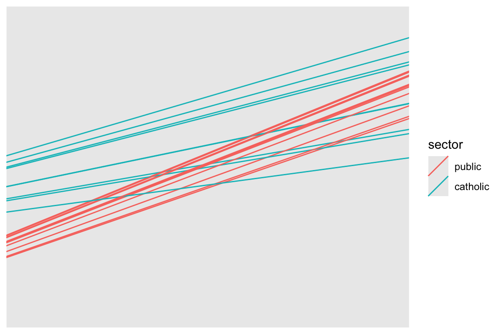
Commentary: We need to specify the size of the plot since we have no data, just the intercepts and slopes. We are using the Emperical Bayes estimates of the random effects added to our school level fixed effects to get the \(\hat{\beta}_{0j}, \hat{\beta}_{1j}\) which define the school-specific regression line for school \(j\).
Our two types of school are clearly separated. Catholic schools have higher average performance, and less of a ses-achievement relationship. Since we have merged in our school level data, we can color the lines by catholic vs public, making our plot easier to read.
A more general plotitng approach is to plot using predict(), where for each student we predict the outcome.
dat$math.hat = predict( M1 )Now let’s plot a subsample of 20 schools
dat.20 = filter( dat, id %in% sub20 )
ggplot( dat.20, aes( ses, math.hat, group=id, col=sector ) ) +
geom_line()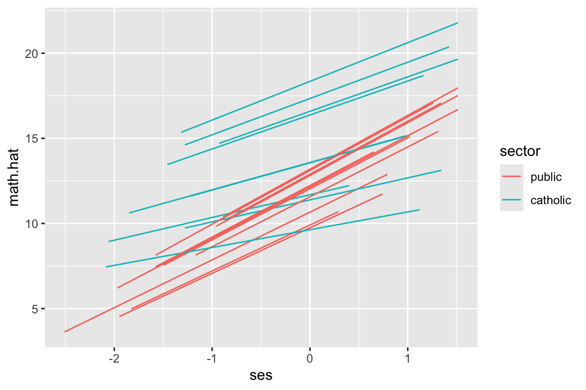
But look at how the lines don’t go the full distance. What ggplot is doing is plotting the individual students, and connecting them with a line. We can see this by plotting the students as well, like this:
ggplot( dat.20, aes( ses, math.hat, group=id, col=sector ) ) +
geom_line() +
geom_point()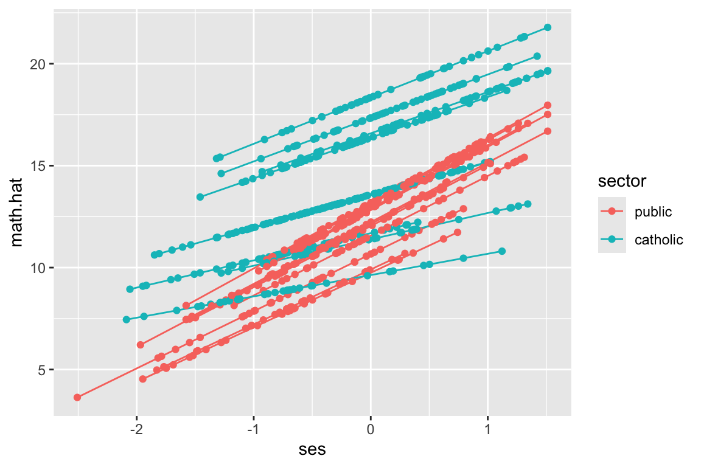
We have a predicted outcome for each student, which removes the student residual, giving just the school trends. If we don’t have students for some range of ses for a school, we won’t have points in our plot for that range for that school. The lines thus give the ranges (left to right) of the ses values in each school.
The way we fix this is we, for each school, make a bunch of fake students with different SES and predict along all those fake students. This will give us equally spaced lines.
That being said: the shorter lines above are also informative, as they give you a sense of what the range of ses for each school actually is. Which approach is somewhat a matter of taste.
We can generate fake children of each group for each school using expand.grid(). This method will generate a dataframe with all combinations of the given variables supplied. Here we make all combinations of ses, for a set of ses values, and school id.
synth.dat = expand_grid( id = unique( dat$id ),
ses = seq( -2.5, 2, length.out=9 ) )
head( synth.dat )# A tibble: 6 × 2
id ses
<chr> <dbl>
1 1224 -2.5
2 1224 -1.94
3 1224 -1.38
4 1224 -0.812
5 1224 -0.25
6 1224 0.312The seq() command makes an evenly spaced sequence of numbers going from the first to the last, with 9 numbers. E.g.,
seq( 1, 10, length.out=4 )[1] 1 4 7 10We then merge our school info back in to get sector for each school id:
synth.dat = merge( synth.dat, sdat, by="id", all.x=TRUE )We finally predict for each school, predicting outcome for our fake kids in each school.
synth.dat$math.hat = predict( M1, newdata=synth.dat )We have predictions just as above, just for students that we set for each school. The school random effects and everything remain because we are using the original school ids.
Using our new data, plot 20 random schools–this code is the same as in the prior subsection.
synth.dat.20 = filter( synth.dat, id %in% sub20 )
ggplot( synth.dat.20, aes( ses, math.hat, group=id, col=sector ) ) +
geom_line()But see our equally spaced students?
ggplot( synth.dat.20, aes( ses, math.hat, group=id, col=sector ) ) +
geom_line() +
geom_point()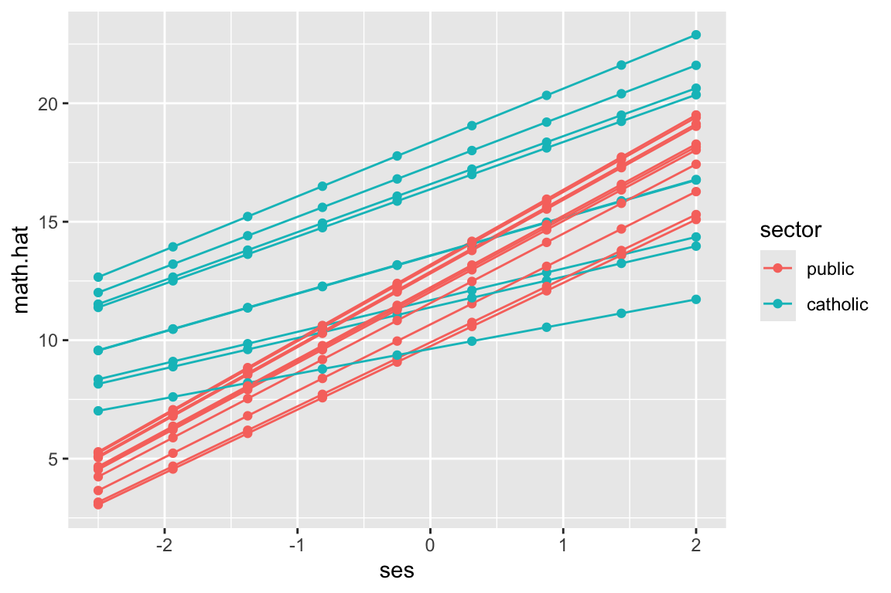
Why do this? The predict() approach allows us to avoid working with the gammas and adding them up like we did above. This is a flexible and powerful approach that avoids a lot of work in many cases. In the next section we illustrate by fitting curves rather than lines. This would be very hard to do directly.
We can use predict for weird nonlinear relationships also. This will be important for longitudinal data. To illustrate we fit a model that allows a quadradic relationship between ses and math achievement.
dat$ses2 = dat$ses^2
M2 = lmer( mathach ~ 1 + (ses + ses2)*sector + meanses + (1 + ses|id), data=dat )
display( M2 )lmer(formula = mathach ~ 1 + (ses + ses2) * sector + meanses +
(1 + ses | id), data = dat)
coef.est coef.se
(Intercept) 12.17 0.21
ses 2.79 0.15
ses2 0.04 0.13
sectorcatholic 1.23 0.33
meanses 3.14 0.38
ses:sectorcatholic -1.35 0.22
ses2:sectorcatholic 0.06 0.21
Error terms:
Groups Name Std.Dev. Corr
id (Intercept) 1.53
ses 0.23 0.49
Residual 6.07
---
number of obs: 7185, groups: id, 160
AIC = 46539.7, DIC = 46495.9
deviance = 46506.8 To fit a quadratic model we need our quadratic ses term, which we make by hand. We could also have used I(ses^2) in the lmer() command directly, but people don’t tend to find that easy to read.
And here we predict and plot:
synth.dat = expand.grid( id = unique( dat$id ),
ses= seq( -2.5, 2, length.out=9 ) )
synth.dat$ses2 = synth.dat$ses^2
synth.dat = merge( synth.dat, sdat, by="id", all.x=TRUE )Note how we make our ses2 variable out of ses just like we did above.
synth.dat$math.hat = predict( M2, newdata=synth.dat )
synth.dat.20 = filter( synth.dat, id %in% sub20 )
ggplot( synth.dat.20, aes( ses, math.hat, group=id, col=sector ) ) +
geom_line()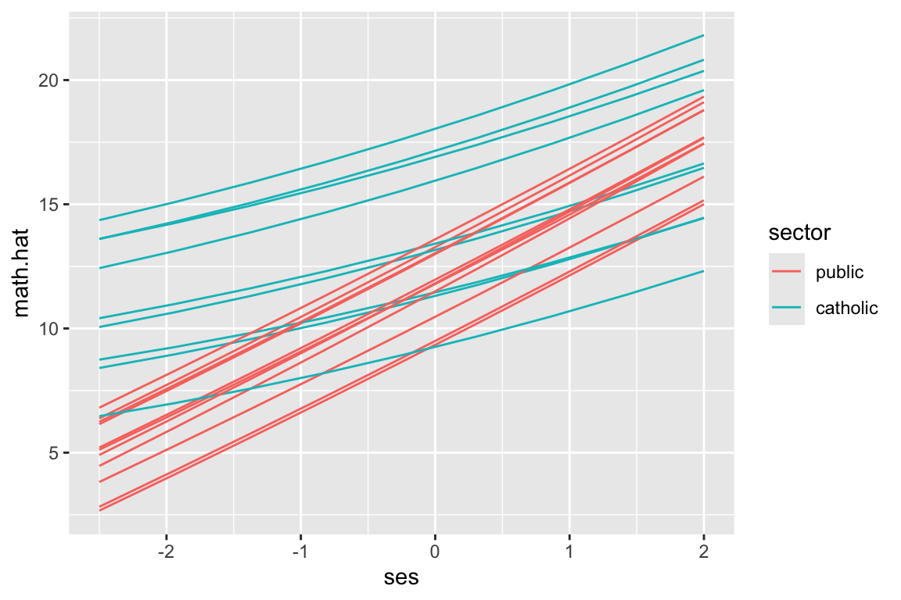
This code is the same as above. The prediction handles all our model complexity for us.
Again, we have our equally spaced students:
ggplot( synth.dat.20, aes( ses, math.hat, group=id, col=sector ) ) +
geom_line() +
geom_point()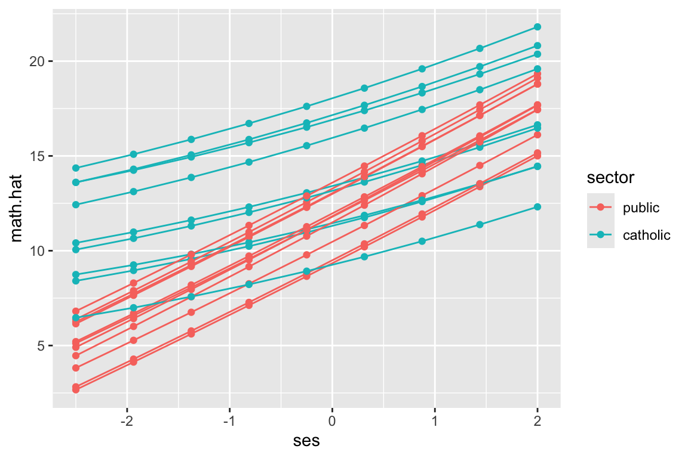
We next do the above, but for longitudinal data. The story is basically the same.
We use the “US Sustaining Effects Study” taken from Raudenbush and Bryk (we have not seen these data in class). We have kids in grades nested in schools. So longitudinal data with a clustering on top of that.
head( dat ) CHILDID SCHOOLID YEAR GRADE MATH FEMALE SIZE RACEETH
1 101480302 3440 -0.5 1 -1.694 1 588 black
2 101480302 3440 0.5 2 -0.211 1 588 black
3 101480302 3440 1.5 3 -0.403 1 588 black
4 101480302 3440 2.5 4 0.501 1 588 black
5 173559292 2820 -0.5 1 -0.194 0 678 white
6 173559292 2820 0.5 2 2.140 0 678 whiteWe will be using the following 3-level quadradic growth model:
M4 = lmer( MATH ~ 1 + (YEAR + I(YEAR^2)) * (FEMALE * RACEETH ) +
(YEAR|CHILDID:SCHOOLID) + (YEAR|SCHOOLID), data=dat )
display( M4 )lmer(formula = MATH ~ 1 + (YEAR + I(YEAR^2)) * (FEMALE * RACEETH) +
(YEAR | CHILDID:SCHOOLID) + (YEAR | SCHOOLID), data = dat)
coef.est coef.se
(Intercept) -0.90 0.06
YEAR 0.76 0.02
I(YEAR^2) -0.04 0.01
FEMALE 0.02 0.05
RACEETHhispanic 0.23 0.10
RACEETHwhite 0.79 0.10
FEMALE:RACEETHhispanic -0.01 0.12
FEMALE:RACEETHwhite -0.34 0.12
YEAR:FEMALE 0.01 0.02
YEAR:RACEETHhispanic 0.10 0.03
YEAR:RACEETHwhite 0.07 0.03
I(YEAR^2):FEMALE 0.01 0.01
I(YEAR^2):RACEETHhispanic -0.01 0.01
I(YEAR^2):RACEETHwhite -0.02 0.01
YEAR:FEMALE:RACEETHhispanic -0.01 0.04
YEAR:FEMALE:RACEETHwhite -0.02 0.04
I(YEAR^2):FEMALE:RACEETHhispanic 0.00 0.02
I(YEAR^2):FEMALE:RACEETHwhite 0.02 0.02
Error terms:
Groups Name Std.Dev. Corr
CHILDID:SCHOOLID (Intercept) 0.79
YEAR 0.11 0.55
SCHOOLID (Intercept) 0.34
YEAR 0.10 0.31
Residual 0.54
---
number of obs: 7230, groups: CHILDID:SCHOOLID, 1721; SCHOOLID, 60
AIC = 16259.7, DIC = 16009.6
deviance = 16109.7 We are just taking the model as given; this document is about showing the fit of this model. In particular, if you haven’t seen 3-level models before, just consider the above as some complex model; the nice thing about predict() is you don’t even need to understand the model you are using! Note we do have a lot of fixed effect interaction terms, allowing for systematically different trajectories for groups of kids that are grouped on recorded race and gender.
We can use our model to predict outcomes for each timepoint in the data. This will smooth out the time to time variation.
dat$Yhat = predict( M4 )
ggplot( dat, aes( YEAR, Yhat, group=CHILDID ) ) +
facet_grid( RACEETH ~ FEMALE ) +
geom_line( alpha=0.25 )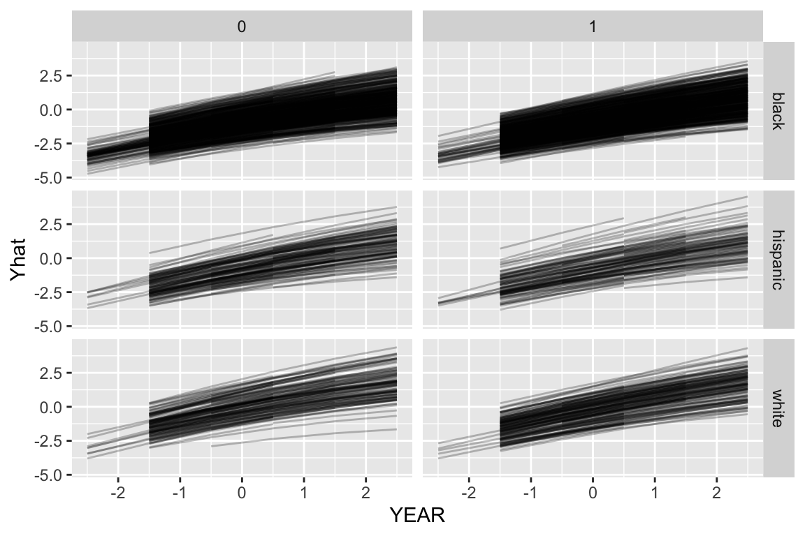
Note how the growth lines don’t go across all years for all kids. This is because we were missing data for those kids in the original dataset at those timepoints, so we didn’t predict outcomes when we used the predict() function, above.
To fix this we will add in those missing timepoints so we get predictions for all kids for all timepoints.
We now want different trajectories for the different groups. We can generate fake children of each group for each school using expand.grid(). This method will generate a dataframe with all combinations of the given variables supplied. Here we make all combinations of year, gender, and race/ethnic group for each school.
synth.dat = expand.grid( CHILDID = -1,
SCHOOLID = levels( dat$SCHOOLID ),
YEAR = unique( dat$YEAR ),
FEMALE = c( 0, 1 ),
RACEETH = levels( dat$RACEETH ) )
head( synth.dat ) CHILDID SCHOOLID YEAR FEMALE RACEETH
1 -1 2020 -0.5 0 black
2 -1 2040 -0.5 0 black
3 -1 2180 -0.5 0 black
4 -1 2330 -0.5 0 black
5 -1 2340 -0.5 0 black
6 -1 2380 -0.5 0 blacknrow( synth.dat )[1] 2160The CHILDID = -1 line means we are making up a new child (not using one of the real ones) so the child random effects will be set to 0 in the predictions.
Once we have our dataset, we use predict to calculate the predicted outcomes for each student type for each year timepoint for each school:
synth.dat = mutate( synth.dat, MATH = predict( M4,
newdata=synth.dat,
allow.new.levels = TRUE) )Now we can plot with our new predictions
ggplot( synth.dat, aes( YEAR, MATH, group=SCHOOLID ) ) +
facet_grid( RACEETH ~ FEMALE ) +
geom_line( alpha=0.5 )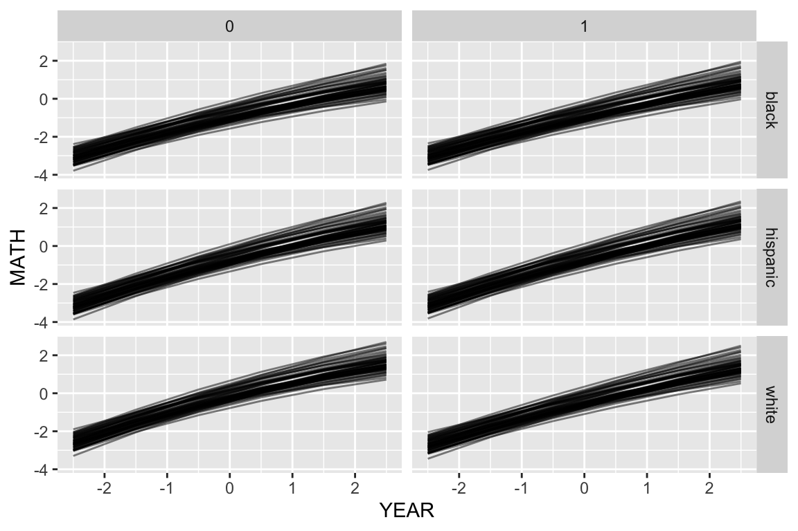
Here we are seeing the different school trajectories for the six types of kid defined by our student-level demographics.
Or, for a subset of schools
synth.dat = mutate( synth.dat, GENDER = ifelse( FEMALE, "female", "male" ) )
keepers = sample( unique( synth.dat$SCHOOLID ), 12 )
s2 = filter( synth.dat, SCHOOLID %in% keepers )
ggplot( s2, aes( YEAR, MATH, col=RACEETH, lty=GENDER ) ) +
facet_wrap( ~ SCHOOLID ) +
geom_line( alpha=0.5) + geom_point( alpha=0.5 )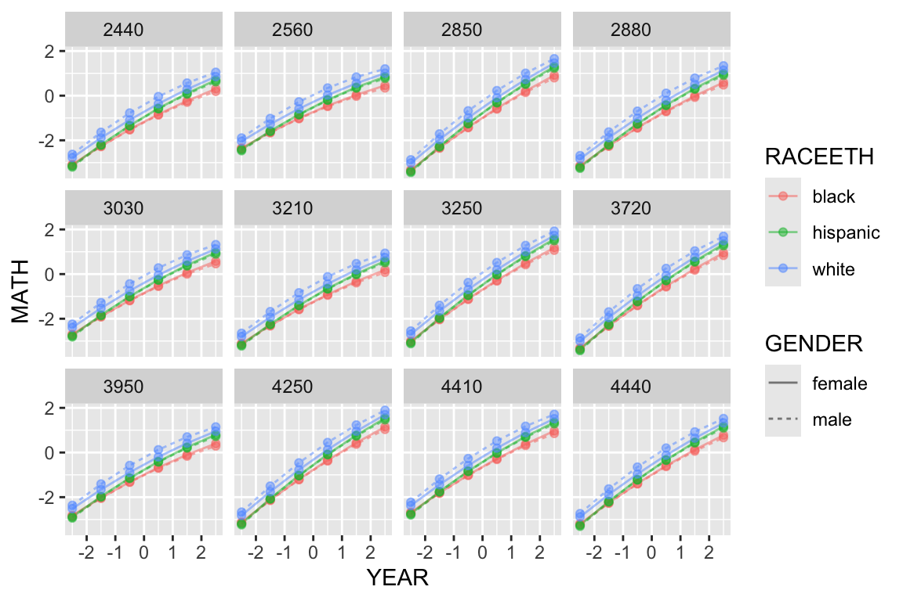
Here we see the six lines for the six groups within each school, plotted in little tiles, one for each school.
You can also aggregate these predictions. This is the easiest way to get what collection of schools, averaging over their random effects, looks like.
Aggregate with the group_by() and the summarise() methods:
agg.dat = synth.dat %>% group_by( GENDER, RACEETH, YEAR ) %>%
dplyr::summarise( MATH = mean( MATH ) )`summarise()` has grouped output by 'GENDER', 'RACEETH'. You can override using
the `.groups` argument.ggplot( agg.dat, aes( YEAR, MATH, col=RACEETH, lty=GENDER ) ) +
geom_line( alpha=0.5) + geom_point( alpha=0.5 )Or do this via predict directly, using the prior ideas
synth.dat.agg = expand.grid( CHILDID = -1,
SCHOOLID = -1,
YEAR = unique( dat$YEAR ),
FEMALE = c( 0, 1 ),
RACEETH = levels( dat$RACEETH ) )
nrow( synth.dat.agg )[1] 36synth.dat.agg = mutate( synth.dat.agg,
MATH = predict( M4,
newdata=synth.dat.agg,
allow.new.levels = TRUE) )
synth.dat.agg = mutate( synth.dat.agg, GENDER = ifelse( FEMALE, "female", "male" ) )
ggplot( synth.dat.agg, aes( YEAR, MATH, col=RACEETH, lty=GENDER ) ) +
geom_line( alpha=0.5) + geom_point( alpha=0.5 )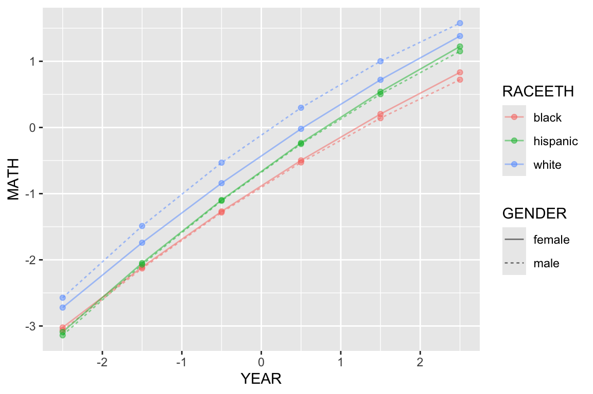
The above plot suggests that the gender gap only exists for the white children. It also shows that there are racial gaps, and that the Black children appear to be falling further behind as time passes.
This block of code is stand-alone, showing the making of fake data and plotting of predictions all in one go. Especially for glms, where there are nonlinearities due to the link function, this will give you the “typical” units, whereas the aggregation method will average over your individuals in the sample.
Finally, we can also make tables to calculate observed gaps (although in many cases you can just read this sort of thing off the regression table). First spread our data to get columns for each race
s3 = spread( synth.dat.agg, key="RACEETH", value="MATH" )
head( s3 ) CHILDID SCHOOLID YEAR FEMALE GENDER black hispanic white
1 -1 -1 -2.5 0 male -3.062596 -3.140761 -2.5729365
2 -1 -1 -2.5 1 female -3.022565 -3.090729 -2.7217908
3 -1 -1 -1.5 0 male -2.129829 -2.071721 -1.4888251
4 -1 -1 -1.5 1 female -2.110195 -2.048890 -1.7416637
5 -1 -1 -0.5 0 male -1.284951 -1.107971 -0.5317704
6 -1 -1 -0.5 1 female -1.268488 -1.096511 -0.8412431Then summarise:
tab = s3 %>% group_by( YEAR ) %>%
summarise( gap.black.white = mean( white ) - mean( black ),
gap.hispanic.white = mean( white ) - mean( hispanic ),
gap.black.hispanic = mean( hispanic ) - mean( black ) )
knitr::kable( tab, digits=2 )| YEAR | gap.black.white | gap.hispanic.white | gap.black.hispanic |
|---|---|---|---|
| -2.5 | 0.40 | 0.47 | -0.07 |
| -1.5 | 0.50 | 0.45 | 0.06 |
| -0.5 | 0.59 | 0.42 | 0.17 |
| 0.5 | 0.65 | 0.38 | 0.27 |
| 1.5 | 0.69 | 0.34 | 0.35 |
| 2.5 | 0.70 | 0.29 | 0.41 |
This again shows widening gap between Black and White students, and the closing gap of Hispanic and White students.
You can also look at estimated random effects as a function of level 2 variables. For example, we can see if there is a pattern of average math score for students by year.
ranef = ranef( M4 )$SCHOOLID
ranef$SCHOOLID = rownames( ranef )
schools = dat %>% group_by( SCHOOLID ) %>%
summarise( n = n(),
size = SIZE[[1]] )
schools = merge( schools, ranef, by="SCHOOLID" )
head( schools ) SCHOOLID n size (Intercept) YEAR
1 2020 97 380 0.40323536 0.15256665
2 2040 89 502 0.11548968 0.07546919
3 2180 168 777 -0.08149782 -0.08226312
4 2330 150 800 0.32372367 -0.04388941
5 2340 220 1133 -0.05151408 -0.01128082
6 2380 87 439 -0.17019248 0.10802309ggplot( schools, aes( size, `(Intercept)` ) ) +
geom_point() +
geom_smooth(method="lm")`geom_smooth()` using formula = 'y ~ x'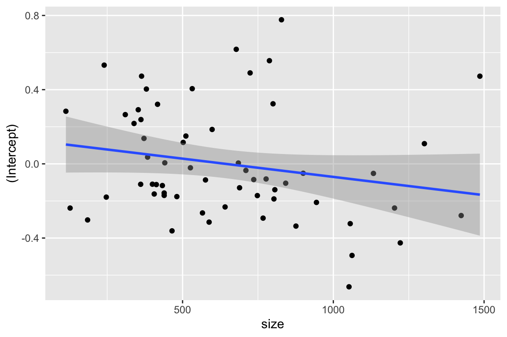
We see a possible negative trend.